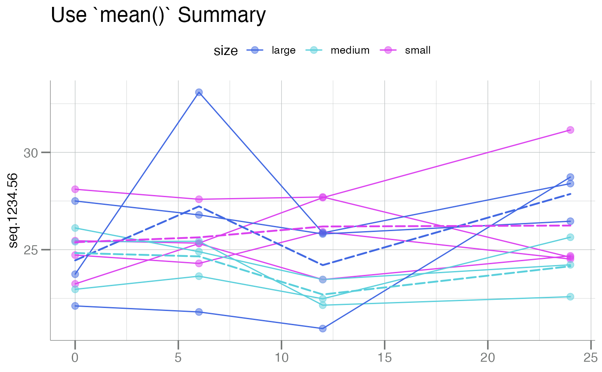
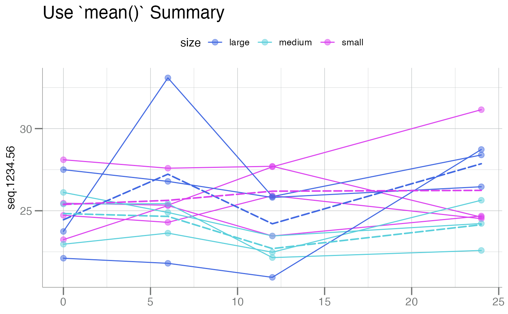
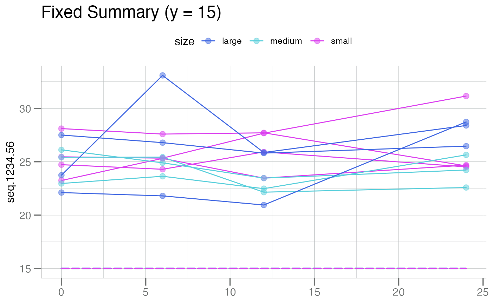
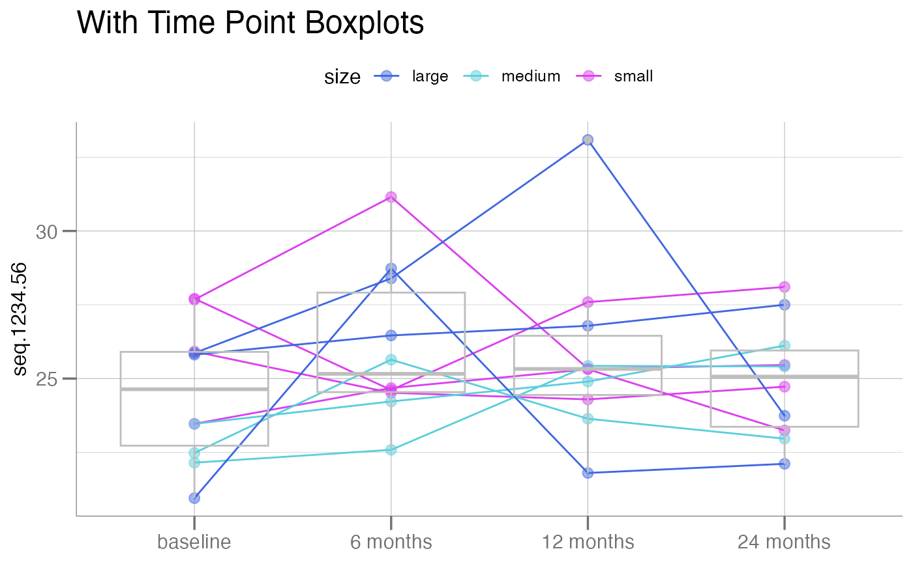
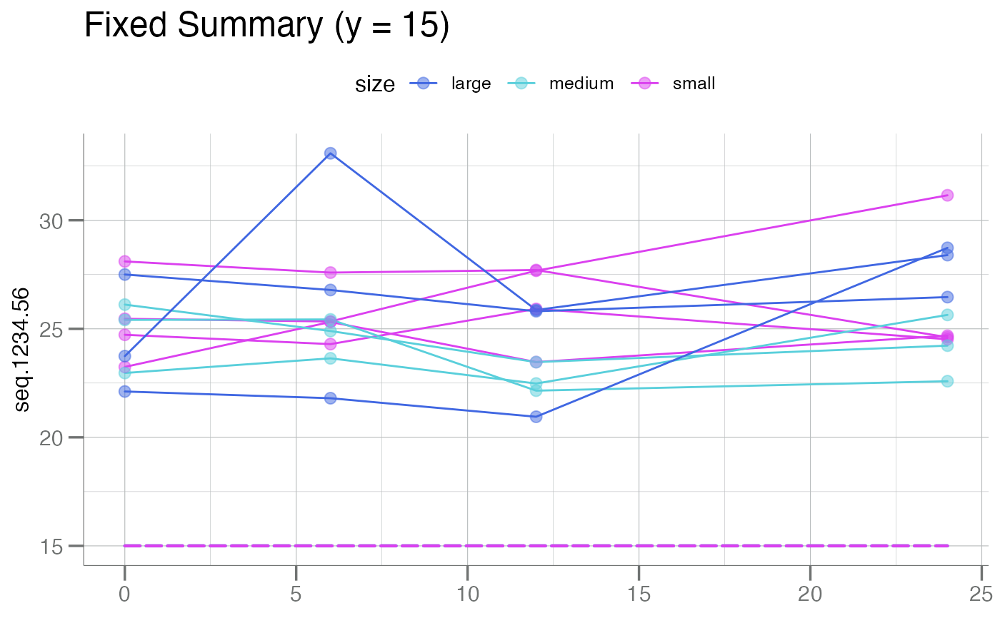
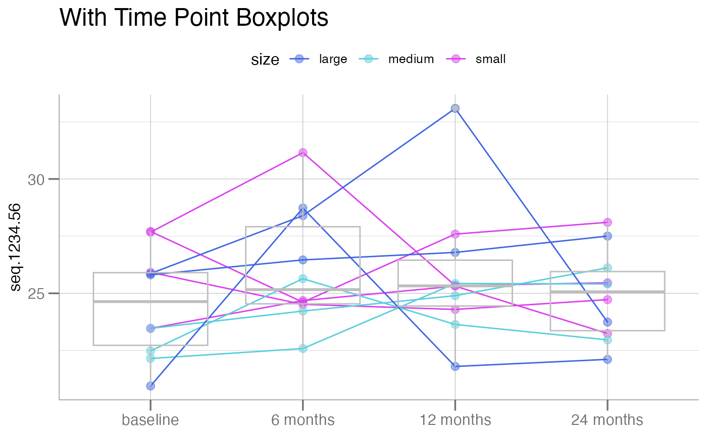

A samples plot by grouping the subjects across time in a
longitudinal study. Can be as few as two longitudinal samples
(e.g. paired samples). See examples for various plotting options.
In order to generate a longitudinal plot by sample, 4 variables
(columns of the data frame data) must be provided:
y: Typically the field containing the y-axis.time: The field containing the time-series information, the x-axis.id: The field containingsubjectidentifiers, i.e. how the points in each line should be connected.color.by(optional): A field describing how groups should be split/colored. The only argument with a default value.
Usage
plotLongitudinal(
data,
y,
time,
id,
color.by = NULL,
size = 2.5,
summary.line = stats::median,
main = NULL,
y.lab = NULL,
x.lab = NULL,
add.box = FALSE
)Arguments
- data
A data frame containing RFU values to plot, typically a
soma_adatclass object.- y
A quoted or unquoted variable name in
datafor the column containing the y-axis (i.e. typically the "Response" variable).- time
A quoted or unquoted variable name in
datafor the column containing the x-axis (i.e. typically the "time" variable).- id
A quoted or unquoted variable name in
datafor the column containing the subject IDs (i.e. how the samples should be connected).- color.by
A quoted or unquoted variable name in
datafor the column indicating how to color/group the lines.- size
Numeric. The size for the points on the subject lines.
- summary.line
A function describing how to summarize the lines. Typically
base::mean()orstats::median(), but can be any function that takes a numeric vector and returns a scalar. To suppress, set toNULL.- main
Character. Main title for the plot. See
ggtitle()forggplot2style graphics.- y.lab
Character. Optional string to set the y-axis label. Defaults to
log10(RFU)if aSeqIdname is detected fory.- x.lab
Character. Optional string for the x-axis. Otherwise one is automatically generated (default).
- add.box
Logical. Should boxplots be drawn for each time point? Note: this groups the subjects together by time point, thus the
timevariable must be a factor.
Examples
fct_vec <- factor(c("baseline", "6 months", "12 months", "24 months"))
levels(fct_vec) <- fct_vec
df <- withr::with_seed(100,
data.frame(
sample_id = rep(1:10L, times = 4L),
pop = rep_len(utils::head(LETTERS, 10L), 40L),
time_point = rep(fct_vec, each = 10L),
seq.1234.56 = stats::rnorm(40, mean = 25, sd = 3.5)
)
)
# Map 'time_point' (chr) to 'time_dbl' (numeric)
new <- df |>
dplyr::left_join(
data.frame(time_point = fct_vec, time_dbl = c(0, 6, 12, 24)),
by = "time_point"
) |>
# code 'size' to correlate with IDs
dplyr::mutate(size = dplyr::case_when(sample_id <= 4 ~ "small",
sample_id > 7 ~ "large",
TRUE ~ "medium"))
# No title; no x-axis label; nothing fancy
plotLongitudinal(new, y = "seq.1234.56", time = "time_point", id = "sample_id")
# Color lines by the 'size' variable
plotLongitudinal(new, y = "seq.1234.56", time = "time_point", id = "sample_id",
color.by = "size")
 # Color lines by the 'size' variable, using the 'time_dbl' x-variable
plotLongitudinal(new, y = "seq.1234.56", time = "time_dbl", id = "sample_id",
color.by = "size")
# Color lines by the 'size' variable, using the 'time_dbl' x-variable
plotLongitudinal(new, y = "seq.1234.56", time = "time_dbl", id = "sample_id",
color.by = "size")
 # Can use unquoted variable names
plotLongitudinal(new, y = seq.1234.56, time = time_dbl, id = sample_id,
color.by = size)
# Summary lines
plotLongitudinal(new, y = seq.1234.56, id = sample_id, time = time_dbl,
color.by = size, summary.line = base::mean,
main = "Use `mean()` Summary")

plotLongitudinal(new, y = seq.1234.56, id = sample_id, time = time_dbl,
color.by = size, summary.line = NULL,
main = "Suppress Summary Lines")
# Can use unquoted variable names
plotLongitudinal(new, y = seq.1234.56, time = time_dbl, id = sample_id,
color.by = size)
# Summary lines
plotLongitudinal(new, y = seq.1234.56, id = sample_id, time = time_dbl,
color.by = size, summary.line = base::mean,
main = "Use `mean()` Summary")

plotLongitudinal(new, y = seq.1234.56, id = sample_id, time = time_dbl,
color.by = size, summary.line = NULL,
main = "Suppress Summary Lines")
 plotLongitudinal(new, y = seq.1234.56, id = sample_id, time = time_dbl,
color.by = size, summary.line = function(x) 15,
main = "Fixed Summary (y = 15)")

# Add boxplots by time point
plotLongitudinal(new, seq.1234.56, id = sample_id, time = time_point,
color.by = size, add.box = TRUE, summary.line = NULL,
main = "With Time Point Boxplots")

# Facet by `size`
plotLongitudinal(new, y = seq.1234.56, id = sample_id, time = time_dbl,
color.by = size, summary.line = base::mean,
main = "Split by 'size'") +
ggplot2::facet_wrap(~ size)
plotLongitudinal(new, y = seq.1234.56, id = sample_id, time = time_dbl,
color.by = size, summary.line = function(x) 15,
main = "Fixed Summary (y = 15)")

# Add boxplots by time point
plotLongitudinal(new, seq.1234.56, id = sample_id, time = time_point,
color.by = size, add.box = TRUE, summary.line = NULL,
main = "With Time Point Boxplots")

# Facet by `size`
plotLongitudinal(new, y = seq.1234.56, id = sample_id, time = time_dbl,
color.by = size, summary.line = base::mean,
main = "Split by 'size'") +
ggplot2::facet_wrap(~ size)